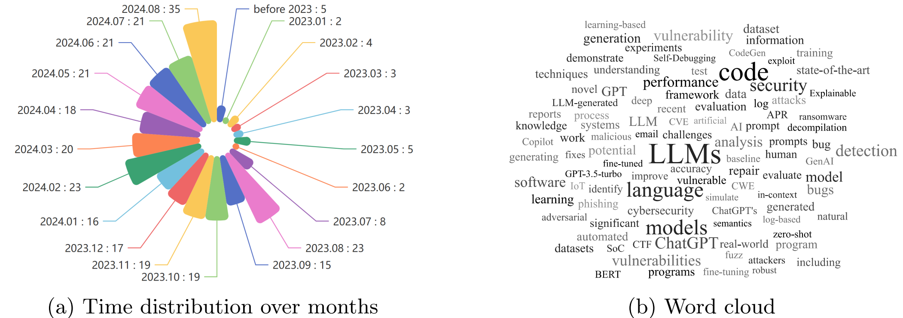
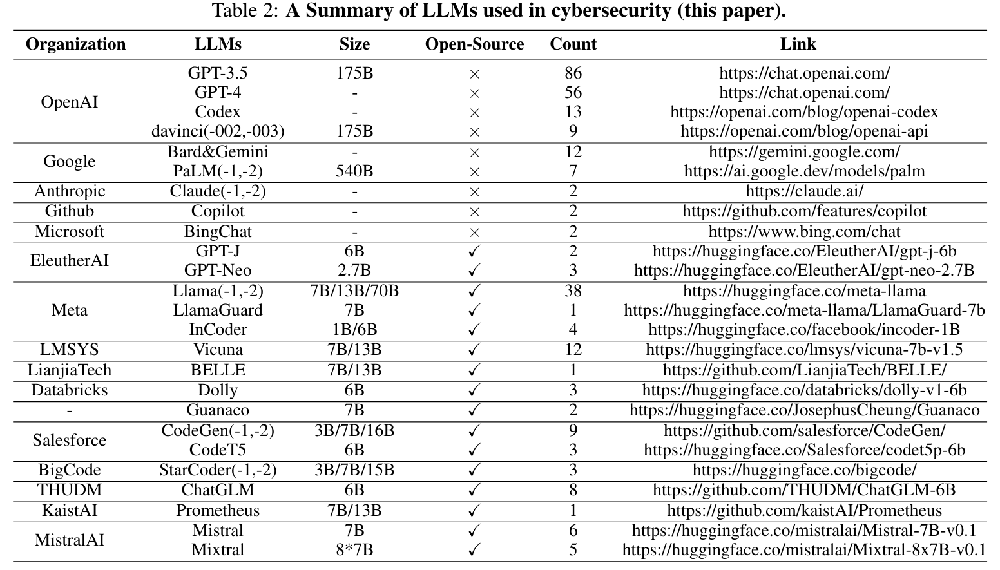
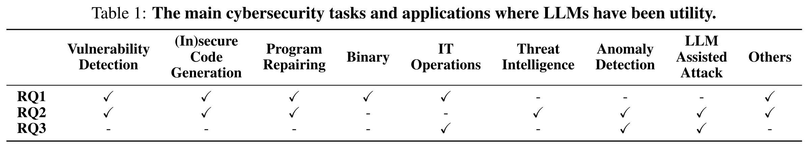

Systematic literature review
When LLMs Meet Cybersecurity
A living atlas of papers on cybersecurity-oriented LLMs, defensive applications, offensive capabilities, vulnerability work, and agentic cyber systems.
Research map
Three questions, eleven working categories
The repository organizes the field around model construction, cybersecurity applications, and agentic research directions.
Paper explorer
Browse the literature corpus
Search titles, filter categories, and jump directly to paper or code links.
Loading papers
Published figures
A visual index for the review
Use the original assets as orientation points, then use the explorer for the live paper list.


